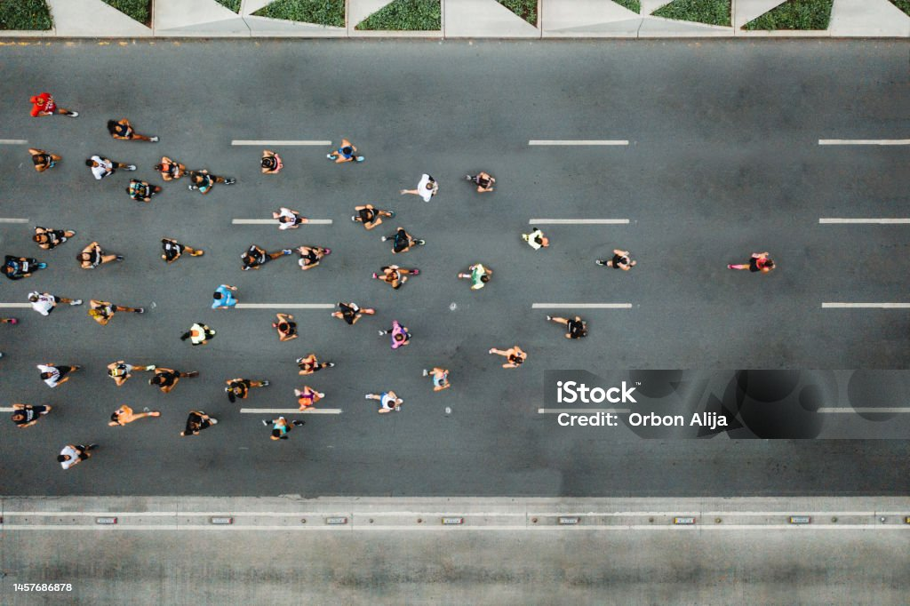

Hey, I'm John
Hey, I'm John! I'm a Computer Science and Advertising dual major at the University of Georgia. As an Eagle Scout, Ron Brown SC, and MLT SWE Fellow, I'm passionate about using tech to positively impact products and people around the world. One unique thing about me is I practice Brazillian Jujitsu in my free time. I'm interested in Product Management.
About John Atkinson
Languages
- English
- French
- Spanish
- Arabic
- Python
- Java
- C
- HTML
- CSS
- Javascript

Leadership & Experience
- UGA NPHC Vice President
- November 2023 - Present
- Organize, budget, and successfully run multiple events within a short amount of time by working with the Executive Board of NPHC
- Maintain cross-council relations by collaborating with other Greek-lettered organizations across campus
- Resident Assistant - UGA Housing
- Directly over 67 residents, and bridging the 4-dorm community of ~1,320+ residents
- Monitor StarRez System and Microsoft Office to track written complaints and infractions
- Plan and implement programming to increase community engagement across my community
- Assist students with academic, personal, and social concerns while managing reports reflecting violations and maintenance issues
Skills
- 😜 Communication
- 😉 Leadership
- 🤩 Teamwork